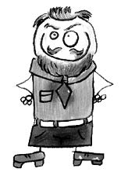

Abdullah Cevdet (1869-1932)
Şair, yazar. Osmanlı dönemi siyasetçilerinden. Askerî Tıbbiye’yi bitirdi. Batılılaşma akımının başlıca temsilcilerindendir. Yazılarında Ömer Cevdet mahlasını kullandı. Dindar bir kişi olarak yetiştirilmesine rağmen, okulda yaygın olan biyolojik materyalizmden etkilendi.
Fünun ve Felsefe adlı eserinde İslam âlimleri ile biyolojik materyalist düşünürlerin görüşlerini bağdaştırmaya çalıştı. İslam dinini, düşünceyi kısırlaştırdığını ve ulusal uyanışı engellediğini söyleyerek eleştirdi.
Bir İslam düşmanı olarak bilinen Doktor Dozy’nin kitabını Tarih-i İslamiyet adıyla tercüme etti. Bu kitapta Hazreti Muhammed’e karşı kullandığı ifadeler dindar insanları rahatsız etti. Bu yüzden pek çok kimse tarafından, Allah düşmanı manasında “Adüvvullah Cevdet” diye anıldı.
İngiliz Muhipleri Cemiyeti’nin kuruluşunda aktif rol oynadı. Kürt Teali Cemiyeti’nde çalıştı. Bahaî havarisi olduğu iddia edilir. Çıkardığı İçtihad dergisinde Bahaîliğin bir dünya dini olarak kabul edilmesini önermesi tepkilere yol açtı. Yine aynı dergide Türkiye’nin nüfus politikasıyla ilgili olarak; “Neslimizi ıslah etmek, kuvvetlendirmek için Avrupa’dan ve Amerika’dan damızlık erkek getirmek gerekir.” şeklindeki yazısı tüm yurtta büyük ve derin bir nefrete sebep oldu.
Osmanlı milliyetçiliği anlayışı yerine, imparatorluk içindeki tüm ulusların eşitliğine dayalı bir birlik görüşünü savundu. Cumhuriyet döneminde de Arap harfleri yerine Latin alfabesinin kullanılmasını savundu, kadınların toplumsal yaşama katkılarının artırılmasını destekledi. Yoğun siyasal faaliyetleri sonucu birkaç defa sürgün edildi.
Psikoloji, sosyoloji, eğitim ve tarih alanında pek çok çeviri yaptı.
Süleyman Nazif ile tartışmaları meşhurdur. Süleyman Nazif’in “Abdullah Cevdet’in dinsizliğinden anlayın ki, din iyi bir şeydir.” sözü ünlüdür.
Abdullah Cevdet 1932 yılında İstanbul’da öldü.
